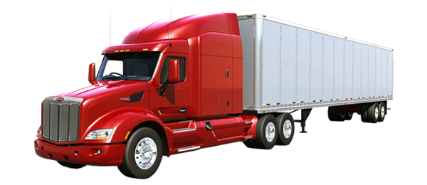

Servicios y equipos
Contamos con los mejores equipos de rastreo del mercado y buscamos siempre estar a la vanguardia para ofrecerle a usted la más alta calidad en nuestros servicios.
Dispositivo de Localización Automática Vehicular (AVL) que combina un modem GSM/GPRS y un receptor de Posicionamiento Global por Satélite (GPS). Sus dimensiones tan reducidas permiten instalarlo de manera invisible en cualquier vehículo.
Su ubicación puede ser monitoreada periódicamente a un servidor en tiempo real soportando una amplia variedad de reportes, entre ellos, alertas de emergencia, hábitos de manejo, traspasos de barreras geográficas, alerta de batería baja, posiciones periódicas de GPS y muchas otras características avanzadas de rastreo.
-
Equipo AntiBloqueo inteligente
Sistema GPS Antibloqueo con Inmovilizador Inteligente Nuestro equipo GPS incorpora tecnología de detección de inhibidores de señal. Si alguien intenta bloquear la señal con un jammer, el sistema lo detecta automáticamente y activa el bloqueo de la unidad, impidiendo que se la lleven. Ideal para el transporte de mercancías o carga, ofrece máxima seguridad ante intentos de robo con tecnología de interferencia.
- -
Nuestro servicio de Rastreo Satelital
Si usted ya cuanta con equipos de rastreo, podemos ofrecerle nuestra plataforma de rastreo a muy bajo costo. Usted podrá tener el control en todo momento ..alertas de velocidad , de desconexión , alertas de movimiento , cercas perimetrales , encendido y apagado de la unidad desde la plataforma , así como reproducir el movimiento de la unidad hasta seis meses guardada en nuestro servidor.
- -
Descuento Flotillas de Taxis y Aseguradoras
Tenga mayor certidumbre de donde se encuentran sus unidades y si no se ha realizado el pago correspondiente podrá boquear la unidad.
Además si ha excedido el límite de velocidad o traspasado los límites de la zona en la que tiene permitido circular podrá saberlo y tomar acciones.Evite que su vehículo sea rentado para actividades ilícitas o que sea sub-arrendado generándole mayores costos. -
Descuento Empresas Fleteras
Por medio de nuestra plataforma o su celular , puede tener ubicada su mercancía aun cuando esté en camino.
Cuando un chofer se detenga a descansar se podrá bloquear la unidad remotamente para evitar su robo.
También contamos con localizadores de batería de larga duración que se pueden poner en la caja del tráiler para tener ubicada su mercancía independientemente del tráiler por el que es arrastrado. -
Descuento Flotilla Empresarial
Tenga el control del kilometraje de sus unidades y programe correctamente sus mantenimientos y compra de refacciones. Mantenga el control del consumo de combustible de cada vehículo. Reduzca sus costos de pólizas de seguro, ya que las aseguradores cuentan con tarifas especiales para las flotillas con sistemas de localización satelital. Le podemos ofrecer un presupuesto sin compromiso, se sorprenderá !!ventas@seguridadmovilgps.com.mx
 Soporte Técnico en Linea
Soporte Técnico en Linea
Nuestros ingenieros están siempre disponibles para resolver cualquier situación que se presente a nuestros clientes- Central de Monitoreo
Contamos con una central de monitoreo que esta siempre alerta en caso de una emergencia brindando la ayuda necesaria al instante . - Instalación a domicilio
La instalación si lo requiere el cliente esta puede ser a domicilio , o en nuestras oficinas .  Manuales electrónicos
Manuales electrónicos
Se entregan manuales en español y procedimientos para manejo del equipo y plataforma de rastreo de forma electronica.. Capacitacion
Capacitacion
Se capacita al personal de forma presencial en el uso del dispositivo y la plataforma de rastreo en sus oficinas , esta capacitación no tiene ningun costo..- Garantias
La garantia es de por vida.  Localizacion
Localizacion
Podrá monitorear su unidad en tiempo real desde la comodidad de su hogar vía internet desde su telefono celular o computadora...- Historia de recorrido
Consultar el historial de su trayectoria por periodo hasta de 3 meses en plataforma de rastreo .. - Apagado de motor y encendido desde su celular
Inhabilitar el motor de la unidad de manera remota en caso de robo,por medio de un mensaje de texto, teniendo como objetivo que el ladrón abandone la unidad. .. - Botón de pánico
Con el Botón de Pánico al presionarlo usted podrá solicitar el apoyo a los numeros configurados.. - Micrófono oculto
Podra activar y escuchar desde su teléfono celular todo lo que se escucha del lado del conductor...
Caracteristicas del Servicio
Caracteristicas del Equipo
UltimasNoticias
- Abril 10, 2025
Ford Fiesta 2015, recuperada en Tlaxcala.
- Febrero 22, 2025
Vehículo recuperado NISSAN Pathfinder 2011, Chiapas,Altamirano.
Promo del Mes
- Abril-Mayo
En la instalacion de 10 de sus unidades , se instalan 3 equipos inmovilizadores de presencia.